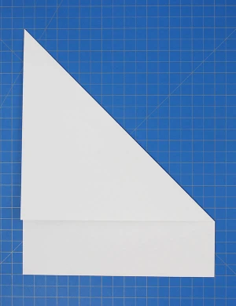
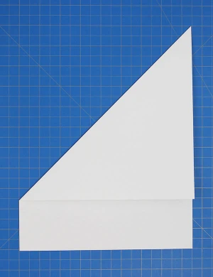
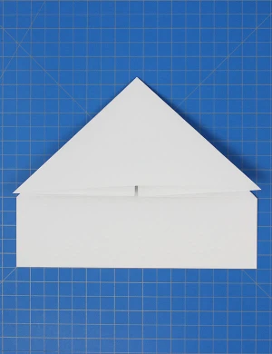
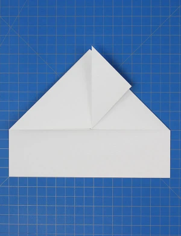
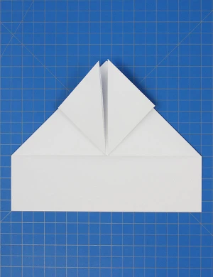
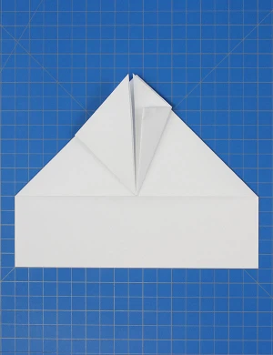

1Step 1
Bring the top-right corner across to the left edge.

Bring the top-right corner across to the left edge.

Open the sheet and repeat with the left corner.

Open the sheet and accordion-tuck both sides into the middle.

Next fold the triangle's bottom-right corner up to the top.

Match that fold on the left corner.

Now fold the diamond's bottom-right edge up onto the midline.
With a calm day and a level throw, expect roughly 14–18 metres (about 46–59 feet). Among the 37 distance-rated designs in this collection it ranks #14. Wind, paper weight, and small crease errors all change the result.
A well-trimmed Sailor Wing should hold about 5–7 seconds of hang time. That places it #15 of 36 designs for time aloft. Launching from a higher spot and keeping the wings level will extend it.
It is best for long floating glides. Folding skill is master. Use Letter & A4, 6 steps, hands only.
Launch gently at a slight upward angle, ideally from a high spot, and let it settle into a glide instead of throwing it hard.